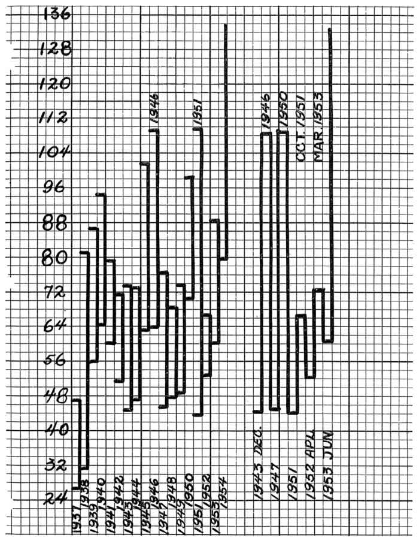
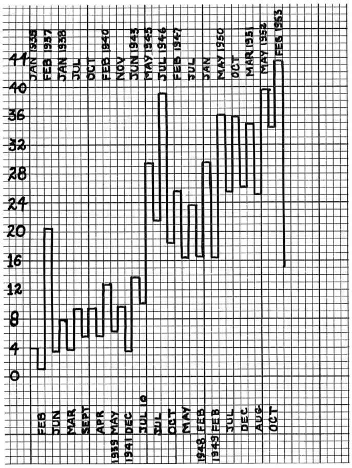
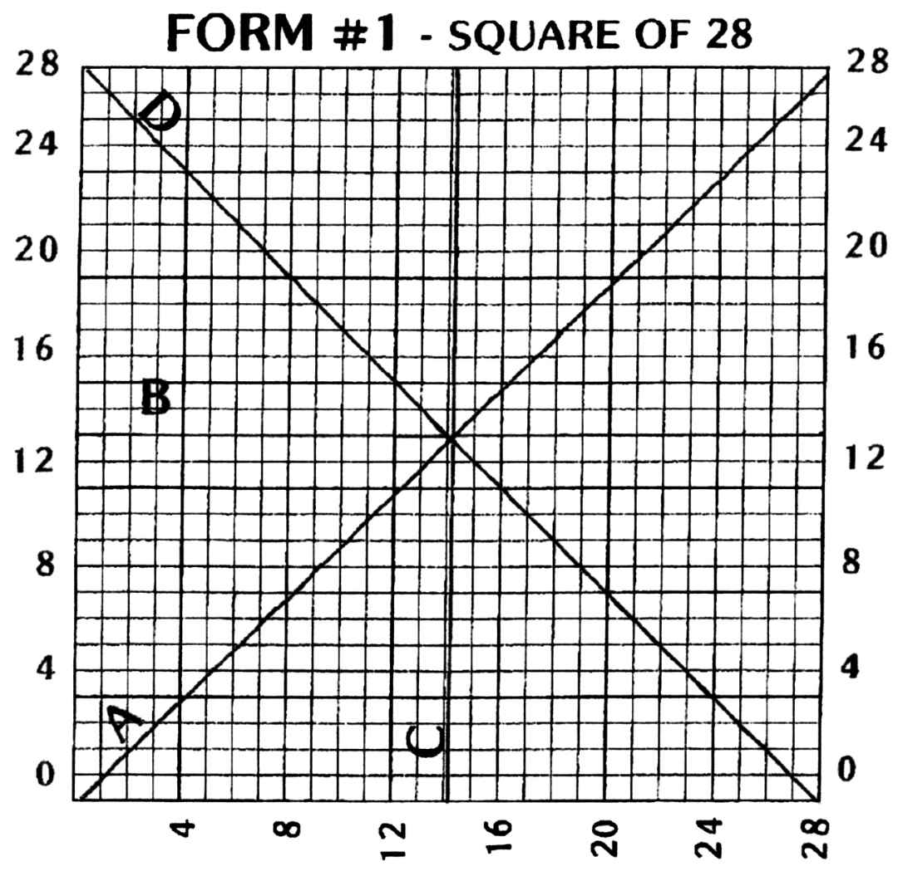
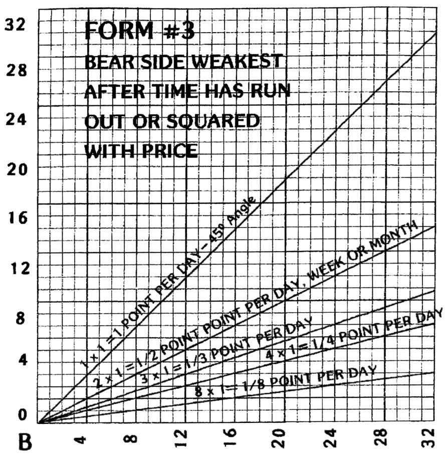
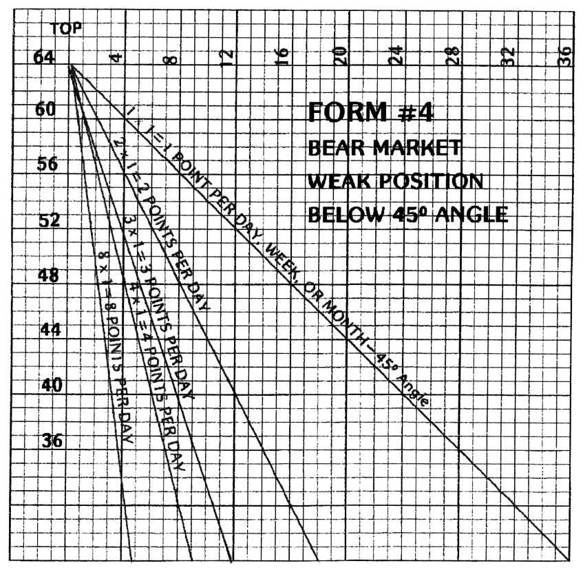
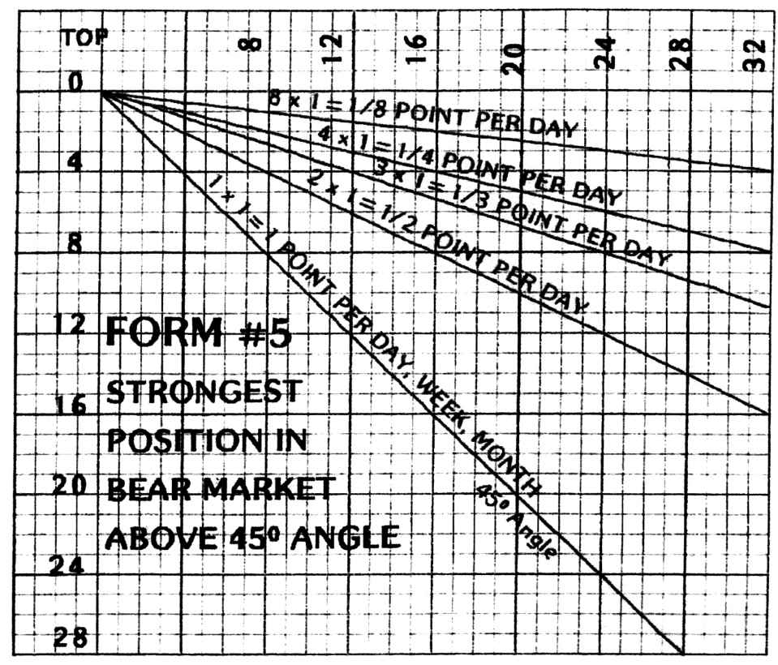
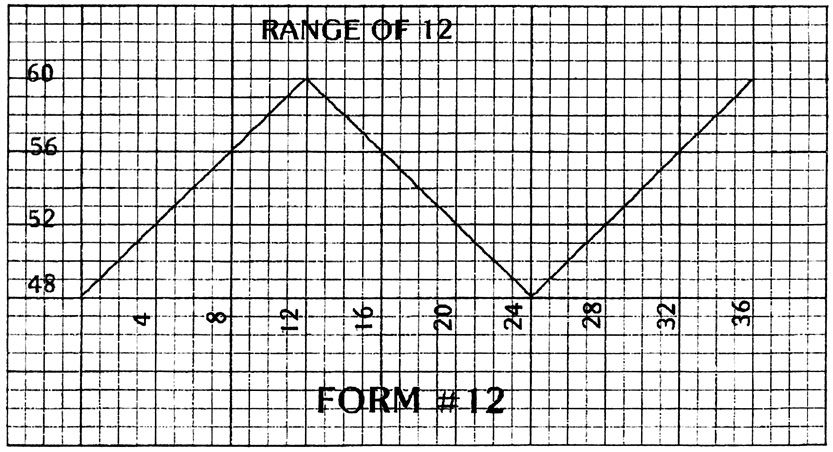
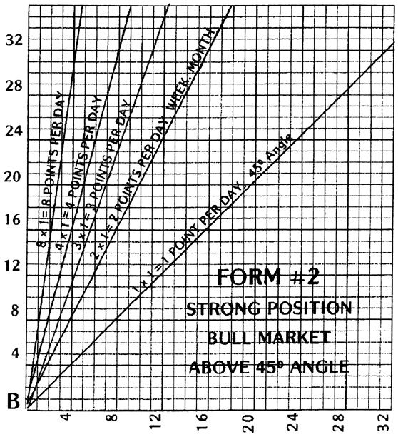
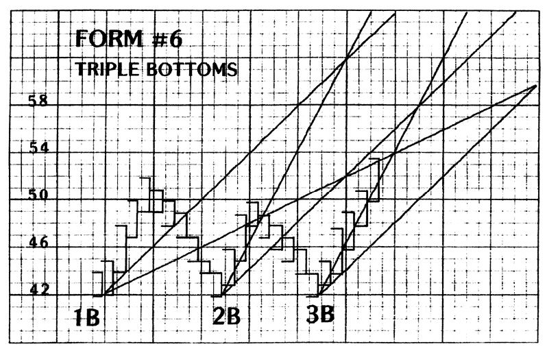
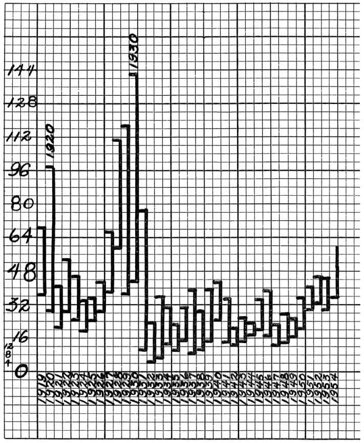

模型1
职业化投机模型
三条禁令与交易法则把投机当职业，以三条禁令与一套交易法则约束行为：不摊薄亏损、不固执于臆测价位、不进场太早或离场太晚。
三条禁令对应三种最典型的亏损机制。摊平把可控的小错变成不可控的大错；固执于臆测价位使人无视市场给出的相反证据；抢跑与恋战则使交易者在趋势未确认时入场、在趋势已反转时不肯离场。江恩的解法不是提高判断力，而是用禁令直接切断这些行为路径，再用交易法则给出替代动作。
原书锚点：不摊平、不固执、不抢跑（第1章·基本的交易法则）
三条禁令 · 交易法则｜先戒掉补仓、死扛、抢跑
四级图表 · 总市值图｜总量看资金，分级看结构
时间周期 · 角度线 · 正方图｜时间与价格放进同一坐标系
隔夜图 · 趋势线 · 季节性｜把决策移到收盘之后
把投机当职业，以三条禁令与一套交易法则约束行为：不摊薄亏损、不固执于臆测价位、不进场太早或离场太晚。
三条禁令对应三种最典型的亏损机制。摊平把可控的小错变成不可控的大错；固执于臆测价位使人无视市场给出的相反证据；抢跑与恋战则使交易者在趋势未确认时入场、在趋势已反转时不肯离场。江恩的解法不是提高判断力，而是用禁令直接切断这些行为路径，再用交易法则给出替代动作。
以全市场与各板块的总市值图判断资金流向，以个股相对大盘的强弱排名筛选标的。
总市值等于全部上市公司股价乘以股本之和，它反映的是资金总量而非少数权重股的涨跌，因此比指数更难被扭曲。当总市值持续上升，说明增量资金在进场；当总市值上升而指数滞涨，说明资金在向中小盘扩散。相对强弱则回答「买什么」：在市场下跌时抗跌、在市场企稳时率先突破的个股，是资金真正的去处。
从重要顶底起算，记录第 30、60、90、120、135、180、225、270、315、360 天（周、月）等节点，观察趋势是否变化。
时间是推动力耗尽的过程。行情启动后，随着时间推移，追随者的边际买盘逐渐减少；当时间到达历史常见节点而价格无法创新高，说明买方已无力维持节奏。江恩用固定的节点序列把这些时刻标定出来，使「该警惕了」从感觉变成日历上的具体日期。
以 45° 线为平衡线，2×1、4×1、8×1 为强势档位，其熊市对应线为弱势档位；以 12×12 与 9 的正方图读出阻力与转折。
角度线把「涨得多快」转化为可比较的斜率，使趋势强弱成为可排序的档位；跌破一条即跌向更低一条，转弱因此成为渐进可观测的过程。正方图则把价格与时间量化到固定网格，当价格与时间在网格上同时到位，即构成转折候选。二者的共同逻辑是：时间与价格必须同时考虑，单看价格会误判。
只记录收盘价与次日开盘价的关系，据此在收盘后决定次日买卖，把决策完全移出盘中。
盘中价格受情绪、消息与流动性扰动，决策质量最低；收盘价则是一天博弈的最终结果，信息含量最高。隔夜图法用「收盘价相对前一日区间的位置」作为唯一信号，把复杂的盘中判断压缩为一个二元选择，从而使执行可复现、可复盘、可交给他人执行。江恩为美国钢铁给出的完整规则还包含加仓与止损的联动：信号连续同向时按固定间隔
不同月份的市场节奏存在系统性差异，某些月份更易形成顶部，某些月份更易形成底部；季节性只作背景概率，不替代价格判据。
季节性来自资金与实体的年度节律：年初的资金配置、年中的结算压力、年末的税收与报表效应，都会周期性改变供求。江恩统计了历年的月度高低点分布，发现某些月份反复出现转折。但他明确：季节性只调整概率权重，不构成独立信号。
抄写三条禁令并各举三个自身案例；为 10 只标的绘制年、月、周、日四图。
绘制全市场与三个板块的总市值图；统计 20 只个股在大盘下跌时的抗跌表现并排序。
标出三个品种的时间周期节点；按隔夜图规则执行 5 笔交易，记录盘中是否改单。









